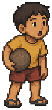
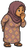
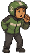
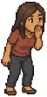
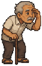

Kota yang dibangun dari komen.
Follow = jadi warga. Bikin Kartu Warga, namamu ikut jalan-jalan di peta Kota Sikepo.
WARGA—
BANGUNAN—
KOIN—
--:-- WIB · —
MISI DAY 2
BANGUN TAVERN GUILD
Tempat berkumpul & daftar job
❤ +1 · 💬 +3 · 📤 +10 · 🔁 REPOST +30
Geser peta · zoom · klik warga untuk lihat kartu · klik Wali Kota Udin untuk disapa
KARTU WARGA SIKEPO
0 warga udah punya kartu





Follow = jadi warga.
Kartu = namamu muncul di peta.
- Namamu jalan-jalan di peta Kota Sikepo
- Ikut usul bangunan lewat komen
- Ngobrol bareng warga lain
Bikin Kartu Warga
Isi username kamu, pilih karakter, dan kartumu langsung jadi. Namamu otomatis ikut jalan-jalan di peta. Satu orang satu kartu ya.
Masuk dulu ya!
Untuk bikin Kartu Warga & ikut fitur kota, masuk pakai akun Google.
Email hanya dipakai untuk login & data kota, tidak ditampilkan ke publik dan tidak dibagikan.
Kartumu sudah jadi!
Upload kartunya ke story & tag akun Wali Kota Udin, biar warga lain tahu.
Statistik Kota
TOTAL WARGA—follower dari 3 wilayah
PUNYA KARTU—warga di peta
KOIN—1 like = 1 koin
BANGUNAN—hari ke-—
Warga per wilayah
Warga baru di peta
Cara jadi warga Sikepo
- Follow akun Wali Kota Udin = resmi jadi warga.
- Komen mau dibangun apa. Komen paling banyak like yang dibangun.
- Like videonya: 1 like = 1 koin. Koin kurang? Bangunannya menyesuaikan.
- Bikin Kartu Warga di sini, namamu ikut jalan-jalan di peta.